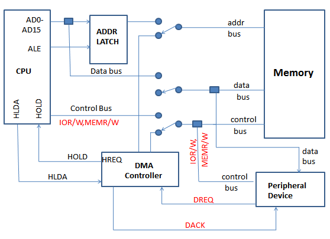
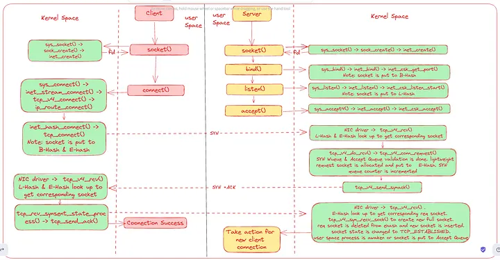
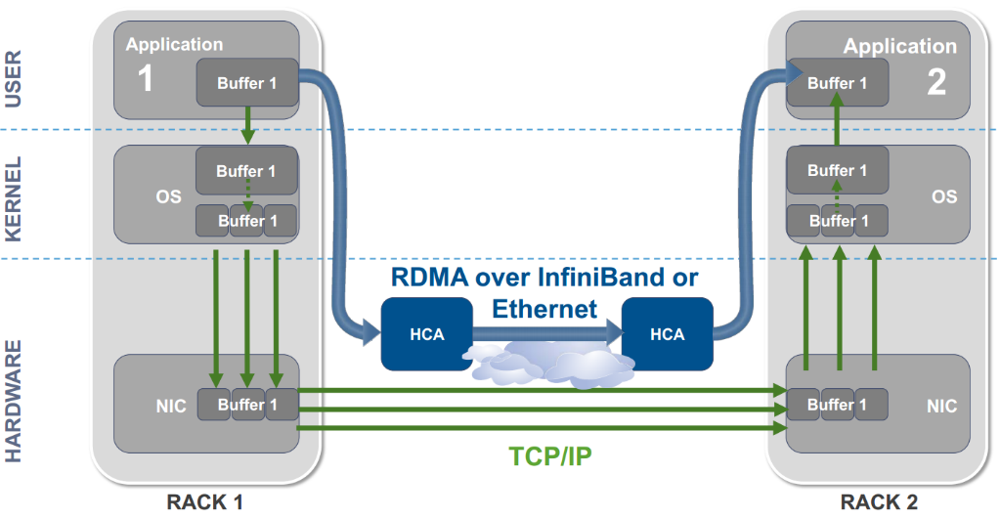

Introduction
Remote Direct Memory Access (RDMA) is a high-speed networking technique where one device can access the memory of another device with low latency, high throughput, and minimal CPU overhead. For RTL and SoC engineers, the important idea is that RDMA avoids the normal host CPU and kernel network stack by allowing the network interface to move data directly into application memory.
Evolution of Data Movement
Early systems relied entirely on the CPU to move data between peripherals and memory. That CPU-driven model required the processor to read device registers and write data into memory, which wasted cycles as I/O rates increased. DMA improved this by delegating memory transfers to dedicated hardware engines. The CPU only configured the transfer, while the DMA engine handled the actual movement.
But DMA is local to a system. When data must cross machines, traditional networking still involves the CPU, kernel, and protocol software. That means extra latency, higher CPU usage, and more memory bandwidth consumed by copies.

Why TCP/IP Still Costs Too Much
A standard network transfer walks through multiple software layers: application, kernel, network stack, and NIC. Each layer often copies data, triggers interrupts, and performs protocol processing in software. These steps are expensive at 10G, 25G, 100G, and beyond.
The result is a bottleneck around the host CPU, rather than the raw network or memory subsystem.

Zero-Copy and RDMA
RDMA is built around the idea of zero-copy transfer: data moves directly between application buffers and hardware without intermediate copies. The sender NIC reads from application memory, and the receiver NIC writes directly into the destination application buffer.
This direct placement model reduces CPU involvement and lets the NIC handle the data movement in hardware.
How RDMA Works
Remote Direct Memory Access allows one machine to access another machine's memory without involving the remote CPU in the actual transfer. The network interface card (RNIC) is responsible for moving the data, while the host CPU typically only posts work requests and manages completion notifications.
In a traditional network operation, the path is: Application → Kernel → Network Stack (TCP/IP) → NIC. With RDMA, it becomes: Application → RNIC.

RDMA and PCIe
An RDMA-capable NIC sits on PCIe like any other high-speed device. When it performs a memory access, it generates PCIe transactions that traverse the root complex and memory controller to reach system RAM. The NIC does not magically access RAM; the access passes through PCIe, translation, routing, and the host memory system.
In an SoC, that path often includes a PCIe-to-AXI bridge, an AXI interconnect, and a DDR controller. In a PC or server, proprietary interconnects may replace AXI, but the overall idea remains the same.
SoC Support for RDMA
For an SoC to support RDMA, the design must allow PCIe devices to generate memory read/write transactions and translate them into the internal memory protocol. This means the system needs:
- A PCIe subsystem or controller
- A PCIe-to-AXI bridge or equivalent interconnect adapter
- An AXI interconnect or internal bus fabric
- A DDR controller that services remote memory transactions
The RNIC issues PCIe reads and writes, the bridge translates those into on-chip transactions, and the memory controller services the transfers.
DMA Engine] B[PCIe TLPs
MemRd / MemWr] C[PCIe Controller /
Root Complex] D[AXI Transactions
AXI Read / Write] E[DDR Controller] F[System RAM] A --> B B --> C C --> D D --> E E --> F classDef pcie fill:#e1f5fe,stroke:#01579b,stroke-width:2px; classDef axi fill:#f3e5f5,stroke:#4a148c,stroke-width:2px; classDef mem fill:#e8f5e8,stroke:#1b5e20,stroke-width:2px; class A,B,C pcie; class D axi; class E,F mem;
Conclusion
RDMA is not just a networking feature; it is a systems-level design pattern that moves work out of the CPU and into hardware. For RTL engineers, the important point is how RDMA bridges the network and memory subsystems: the NIC initiates direct memory access, and the host infrastructure routes those requests to DRAM.
In future blog posts, this article will be followed by deeper exploration of FPGA-based RDMA NIC IP and open-source NIC implementations.